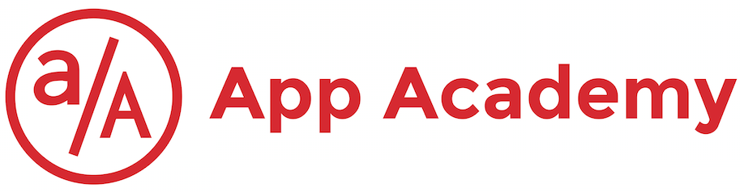

Pairing Pro-Tips
-
Brush your teeth.
We're in close quarters here. -
Shower.
See Pro-Tip #1. -
Follow the timer.
Make sure to switch every fifteen minutes. -
It's not a race.
It's more important for both partners to understand the material than to complete the day's assignments before 6:00. -
Ask 'Why?'
If you don't understand why something works / doesn't work, pause and get clarification from your partner.
If you are both unsure, ask your TA :) -
NEVER STEAL A LEARNING OPPORTUNITY.
-
Don't touch the keyboard...
...if you're not the driver.
Learn to talk through your ideas.
Love to talk through your ideas. -
Make it work, then make it work better.
-
Wash your hands.
Sharing keyboards is a good way to spread germs.
Washing your hands, as well as wiping down your keyboard / workstation, can help to prevent you from getting sick! -
Premature optimization is the enemy.
-
Teaching your partner helps the both of you to learn.
-
Listen to Ned.
-
No seriously, brush your teeth.
You might enjoy coffee and cigarettes.
Your partner might not. -
Improve your Google-Fu.
-
Be patient.
-
There's no "I" in Pair.
Use 'we' and 'us' when discussing work you've done, or plan to do. -
Boost your WPM.
 Slow typing can make the day drag. But don't fret if you're slow - we've all been there!
Slow typing can make the day drag. But don't fret if you're slow - we've all been there!
Improve your typing speed with typeracer.
And study these keyboard shortcuts to make life easier.
You will unlock your typing-potential in no time :)
